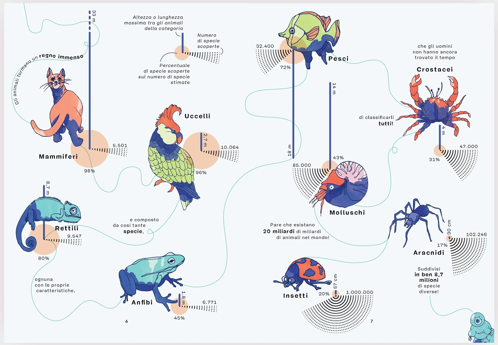
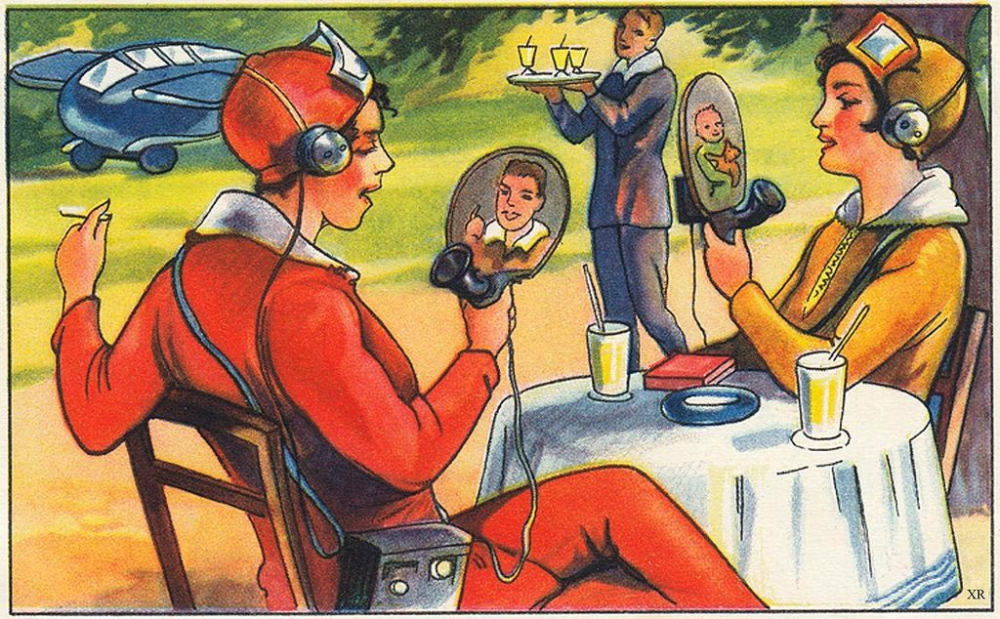

Current Exhibitions
The Strange Worlds of Moebius
Jean Giraud, better known as "Moebius," was and continues to be one of the most influential sci-fi artists. His weird and surrealistic landscapes and cityscapes laid the foundation for cyberpunk and modern-day sci - fi fantasy as a style. His beautiful lineworks brought whole industries alive. MonoMuse is proud to host a special selection of his work, including sketches for an unrealizedDunemovie, original comic pages, and some of Moebius's personal experiments with the technology of his time.
Data and Dreams: The beauty of data visualization

This exhibition brings the work of globally acclaimed designers together
to celebrate interesting and impactful uses of data visualization, an
underrated discipline and art form that fuses math, science, data science
and art.
Science (Non)fiction: Retrofuturism brought to life

For this exhibition, we tasked numerous teams comprised of industrial designers,
mechanical engineers, science fiction artists, and more, to bring the theoretical inventions
of the past to the 21st century. Enjoy a vast array of contraptions from rayguns
to "floating" cars in this interdisciplinary show of art and science.